序列展示可视化工具全景
十六张实拍对比：蛋白结构域、基因结构、多序列比对各该用哪个工具。
工具全景：8 款工具覆盖 4 大场景
序列展示是论文里最常见也最容易画丑的一类图。本文按使用场景把 8 款工具分成四类，每款给出界面截图与示例输出，并标注上手难度：
| 场景 | 工具 | 上手难度 |
|---|---|---|
| 在线序列浏览器 | NCBI Sequence Viewer · GSDS 2.0 | ⭐ 简单 |
| 基因组浏览器 | UCSC Genome Browser · IGV | ⭐⭐⭐ 中等 |
| 多序列比对与结构域 | Jalview · ESPript · InterProScan | ⭐⭐–⭐⭐⭐ |
| 序列绘图 | IBS 2.0 | ⭐⭐ 较简单 |
选择逻辑很简单：查 NCBI 记录顺手看序列用 Sequence Viewer；画基因结构示意用 GSDS / IBS；探索注释与组学 track 用 UCSC / IGV；比对排版出图用 Jalview / ESPript；批量注释结构域用 InterProScan。
① NCBI Sequence Viewer · 在线序列浏览器
嵌入在 NCBI 各数据库记录页里的序列浏览器：输入 accession 即可查看基因、转录本、变异与公开 RNA-seq track，无需安装，适合快速核查与引用记录页截图。
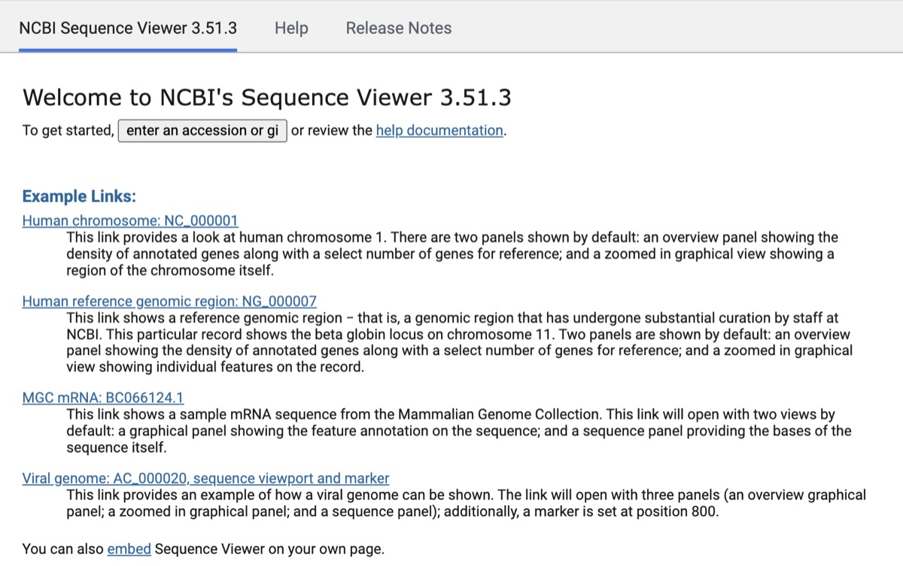
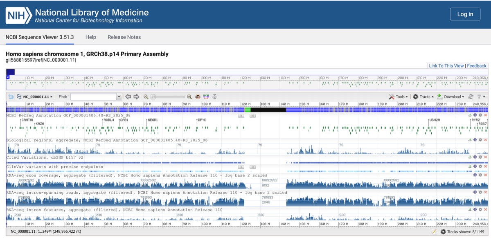
② GSDS 2.0 · 基因结构在线绘图
北大 CBI 的 Gene Structure Display Server6：提交 GFF3 / BED 等格式的基因特征，一键生成外显子–内含子–UTR 结构图，支持按进化树排序输出，适合多基因家族结构比较。
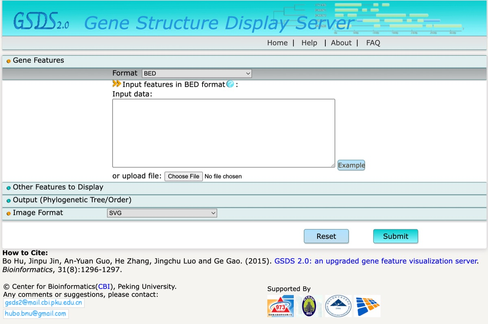
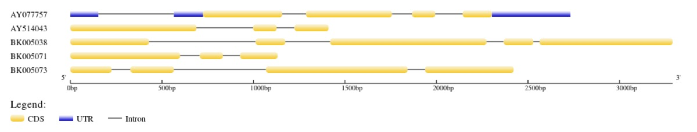
③ UCSC Genome Browser · 基因组浏览器
注释资源最丰富的公共基因组浏览器之一2：RefSeq/GENCODE 转录本、OMIM 表型、dbSNP 变异、GTEx 表达、ENCODE 调控元件与多物种保守性一页看尽，适合定位区域的功能背景调研。
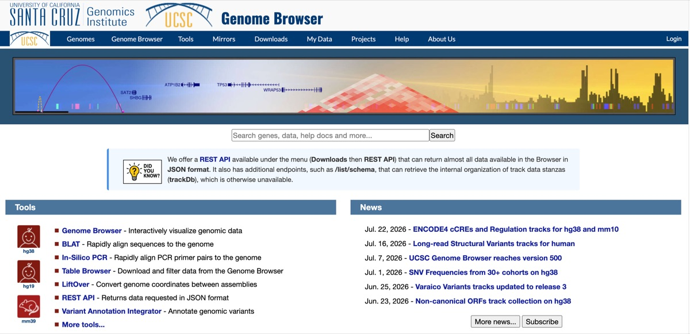
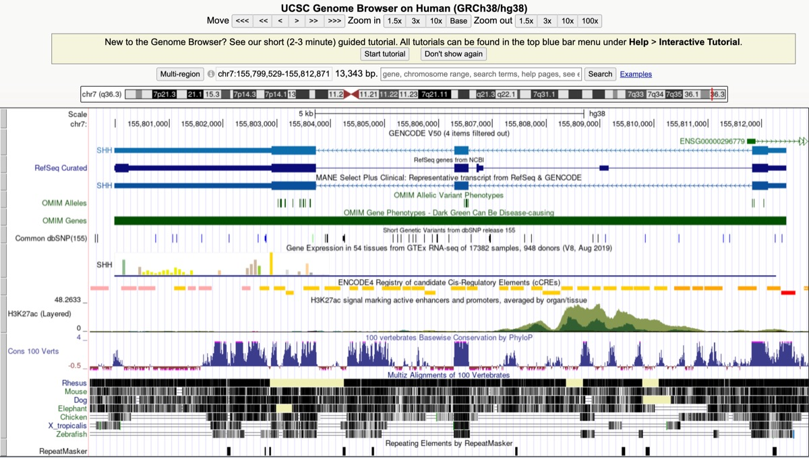
④ IGV · 本地基因组浏览器
Integrative Genomics Viewer1：桌面版 / Web / igv.js 三种形态，本地加载 BAM 与 VCF 查看比对、覆盖度与变异，是测序数据质检和变异核查的标准工具。
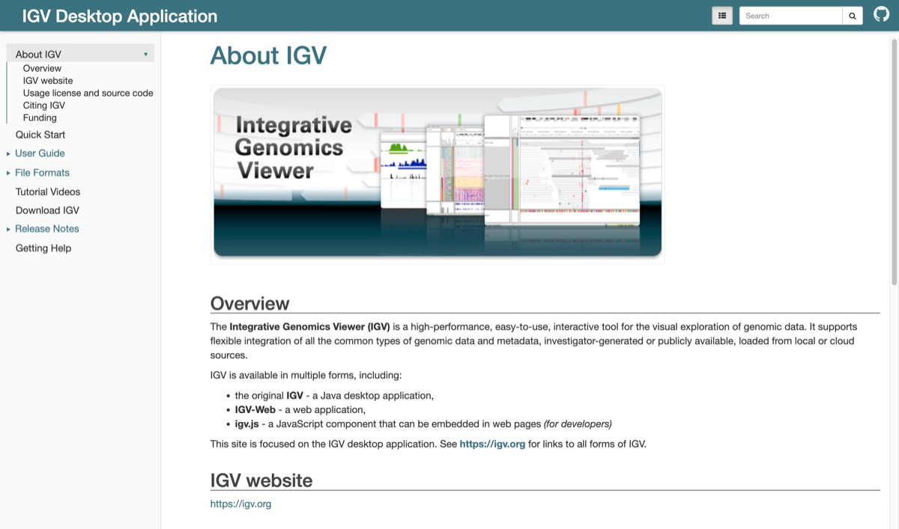
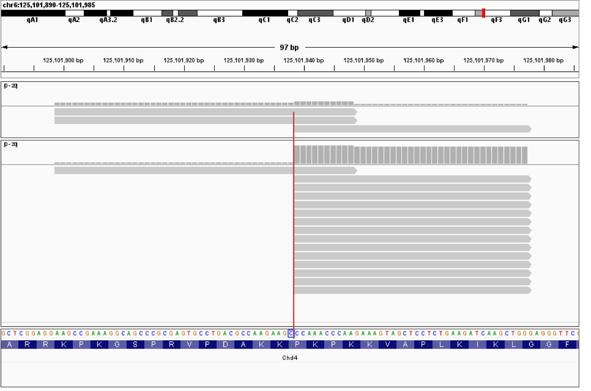
⑤ Jalview · 多序列比对编辑与分析
免费跨平台的多序列比对编辑、可视化与分析工作台3：内置多种比对算法（经 JABAWS 调用）、支持系统树与 PCA 分析，可对接 UniProt、PDB、ENA 等外部资源，还能直接产出发表级图片。
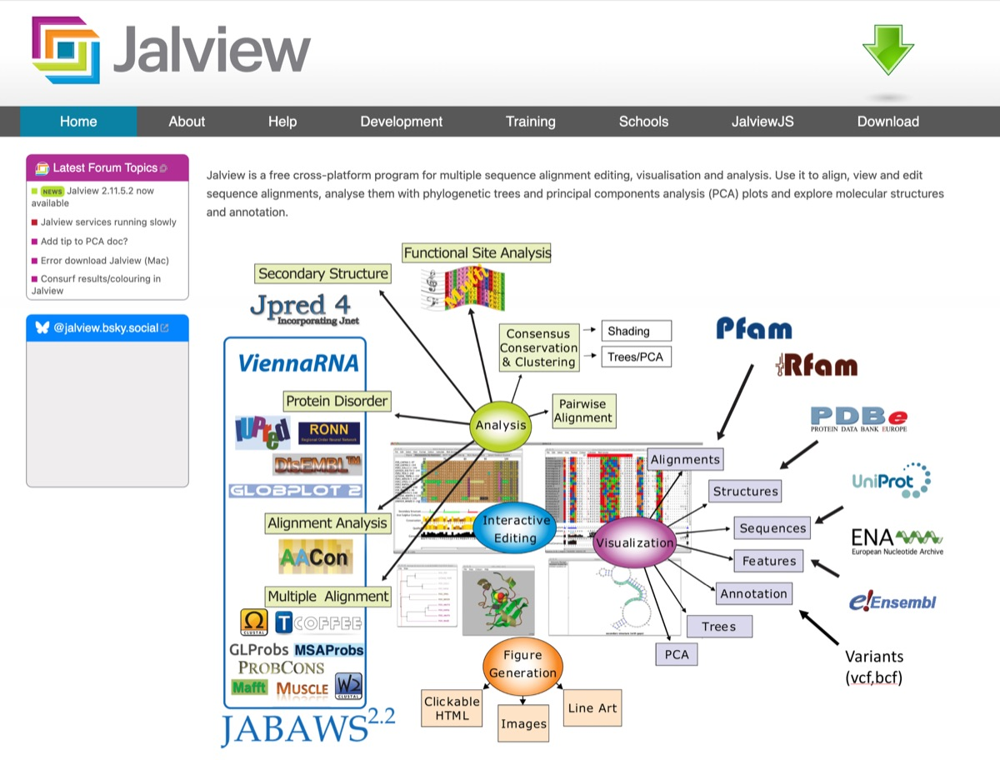
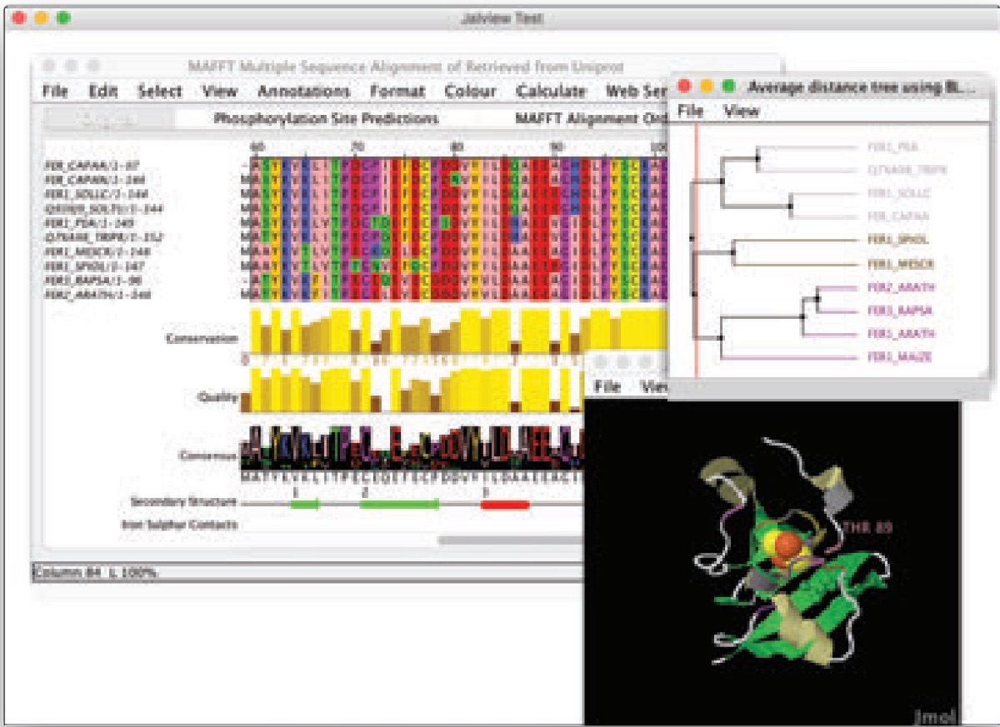
⑥ InterProScan · 结构域批量注释
EMBL-EBI 的蛋白家族与结构域扫描工具5：网页版单次可提交 100 条序列，批量任务用命令行版本地运行；结果按 Pfam、SMART 等成员库归并，是功能注释流水线的常客。
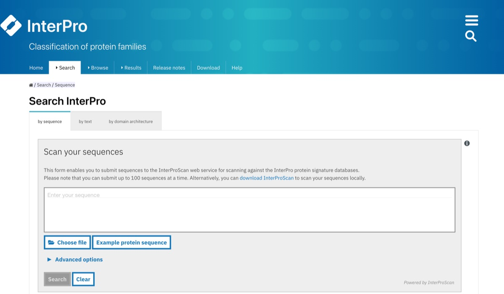
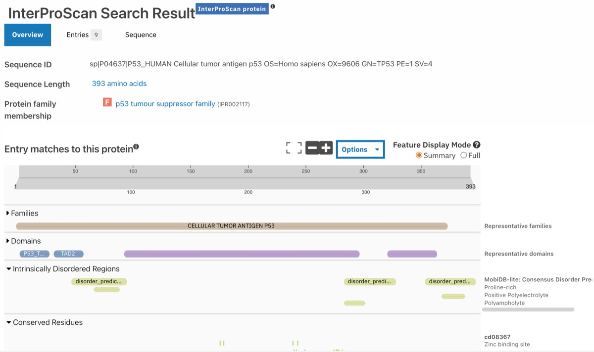
⑦ ESPript 3 · 比对结果排版出图
Easy Sequencing in PostScript4：把已有的多序列比对渲染成发表级图——相似度着色、二级结构标注、一致性序列一应俱全；核酸比对的排版交给姊妹版 N-ESPript。
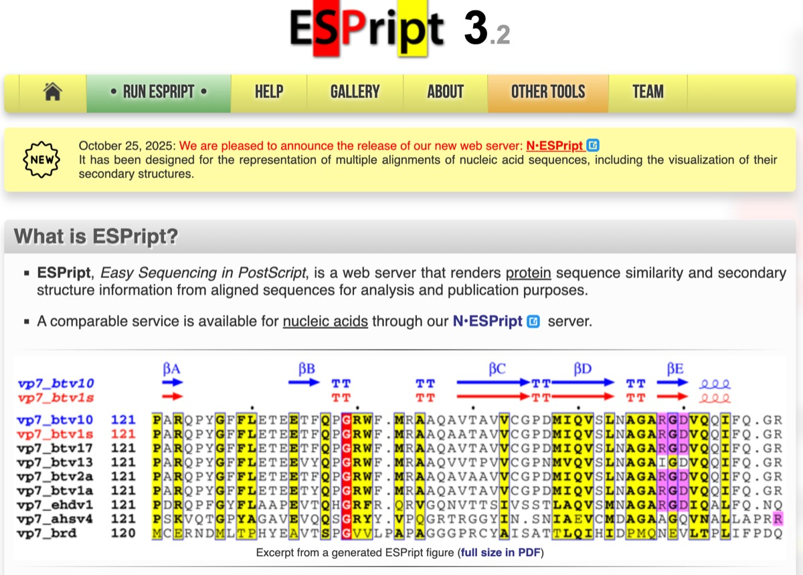
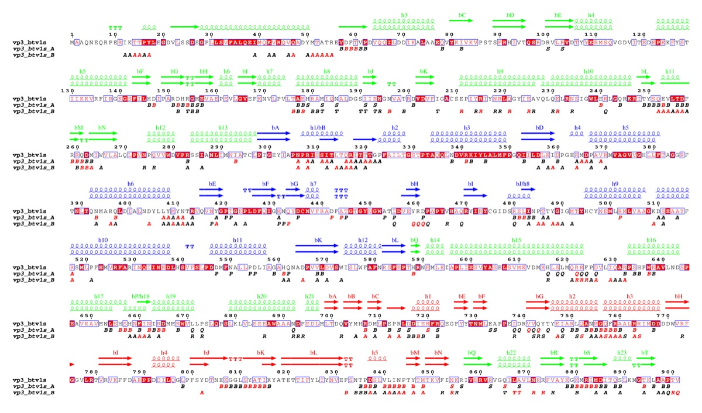
⑧ IBS 2.0 · 序列示意图绘制
Illustrator for Biological Sequences7：双模式（网页 + 桌面）绘制蛋白/核酸的示意图，多边形、括号、曲线等图形元素自由组合，是画基因结构、载体构建、蛋白结构域示意图的利器。
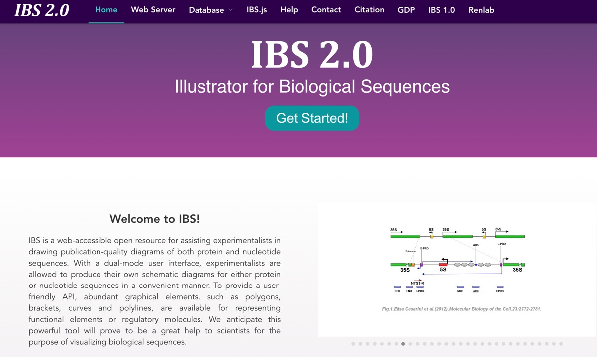
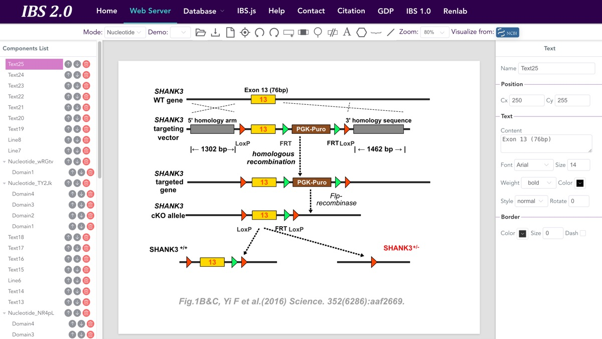
选型建议
- 只是看一眼序列——NCBI Sequence Viewer，零安装；
- 画基因结构 / 构建示意图——GSDS 2.0（批量、带进化树排序）或 IBS 2.0（自由排版）；
- 区域功能调研——UCSC；看自己的比对与变异——IGV；
- 比对出图——Jalview（可编辑分析）或 ESPript（排版更精致）；
- 结构域批量注释——InterProScan（> 100 条务必用本地版）。
延伸阅读与参考文献
- Robinson JT, Thorvaldsdóttir H, Winckler W, et al. Integrative genomics viewer. Nature Biotechnology. 2011;29(1):24–26. doi:10.1038/nbt.1754
- Nassar LR, Barber GP, Benet-Pagès A, et al. The UCSC Genome Browser database: 2023 update. Nucleic Acids Research. 2023;51(D1):D1188–D1195. doi:10.1093/nar/gkac1072
- Waterhouse AM, Procter JB, Martin DMA, Clamp M, Barton GJ. Jalview Version 2—a multiple sequence alignment editor and analysis workbench. Bioinformatics. 2009;25(9):1189–1191. doi:10.1093/bioinformatics/btp033
- Robert X, Gouet P. Deciphering key features in protein structures with the new ENDscript server. Nucleic Acids Research. 2014;42(W1):W320–W324. doi:10.1093/nar/gku316
- Jones P, Binns D, Chang HY, et al. InterProScan 5: genome-scale protein function classification. Bioinformatics. 2014;30(9):1236–1240. doi:10.1093/bioinformatics/btu031
- Hu B, Jin J, Guo AY, Zhang H, Luo J, Gao G. GSDS 2.0: an upgraded gene feature visualization server. Bioinformatics. 2015;31(8):1296–1297. doi:10.1093/bioinformatics/btu817
- Liu W, Xie Y, Ma J, et al. IBS: an illustrator for the presentation and visualization of biological sequences. Bioinformatics. 2015;31(20):3359–3361. doi:10.1093/bioinformatics/btv362